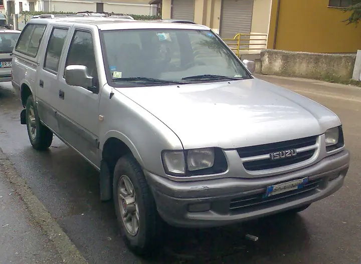
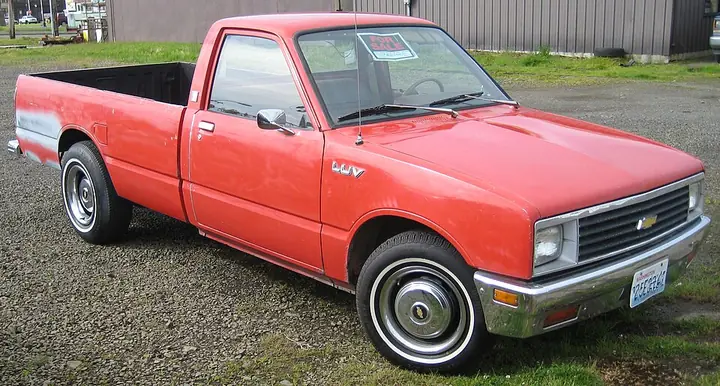
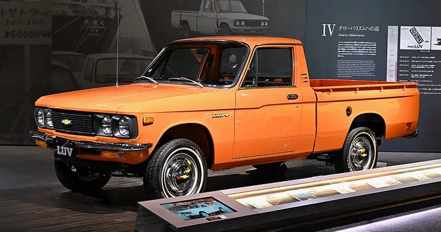

Isuzu Faster
Third generation (TF; 1988) · 1988–2017
Abstract
This generation of the Isuzu Faster was built 1988–2002 in Japan: Fujisawa, Kanagawa (Fujisawa Plant), Chile: GM Chile Arica Plant, China: Beijing (Foton), Shenyang (Jinbei), Chongqing (Qingling), Nanchang (Jiangling) and other plants. Body styles: 2-door pickup truck, 2-door pickup truck (Space Cab), 4-door pickup truck (Crew Cab).


1Specifications
| Production | 1988–20021992–2017 (China) |
|---|---|
| Assembly | Japan: Fujisawa, Kanagawa (Fujisawa Plant)Chile: GM Chile Arica PlantChina: Beijing (Foton), Shenyang (Jinbei), Chongqing (Qingling), Nanchang (Jiangling)Colombia: GM Colmotores Bogotá PlantPhilippines: Dasmariñas (1989–1992), Biñan (1992–2005) (IPC)Portugal: Vendas Novas (ITUK)Thailand: Samrong, Samut PrakanTunisia: Kairouan (IMM)United States: Lafayette, Indiana |
| Body style | 2-door pickup truck2-door pickup truck (Space Cab)4-door pickup truck (Crew Cab) |
| Engine | gasoline:2.2 L C22NE/22LE I42.3 L 4ZD1 I42.6 L 4ZE1 I43.1 L LG6 V63.2 L 6VD1 V6diesel:2.5 L 4JA1-T turbo I42.8 L 4JB1-T turbo I43.0 L 4JH1-T turbo I43.1 L 4JG2-T turbo I4gasoline (China):2.0 L 4G63 I4 (Jiangling)2.2 L I4 (Jinbei)2.4 L I4 (Jiangling)2.5 L 4ZE3 I4 (Qingling Isuzu)diesel (China):2.1 L turbo I4 (Jinbei)2.2 L turbo I4 (Jinbei)2.4 L C240 I42.4 L turbo I4 (Jinbei)3.0 L 4HK1-TC1 turbo I4 (Qingling Isuzu) |
| Transmission | 5-speed manual4-speed automatic |
| Wheelbase | 2680 mm (SWB)3025 mm (LWB) |
| Length | 4425 mm (SWB)4940 mm (LWB)6150 mm (Rodeo Camper) |
| Width | 1690 mm |
| Weight | 1295-1698 kg |
| Also called | Isuzu Rodeo (Japan and Thailand; 4WD only)Isuzu Dragon Eyes (Thailand; 1998–2000)Isuzu Super Dragon Eyes (Thailand; 1999–2000)Isuzu Dragon Power (Thailand; 2000–2002)Isuzu Fuego (Philippines)Isuzu Invader (Malaysia)Isuzu Ippon (Israel)Isuzu KB (South Africa)Isuzu Pickup (North America)Isuzu TFIsuzu TFR (Thailand)Isuzu TT FortigoChevrolet LUVChevrolet T-Series (Egypt)Holden RodeoHonda Tourmaster (Thailand)Opel CampoVauxhall Brava (United Kingdom)Bedford Brava (United Kingdom)Foton SUP (China)Jinbei Jindian SY10 (China)JiangLing Baodian (China)JiangLing Hunter (Philippines)Winnerway ZH6500/ZH1021LU2 (China)Xinkai Century (China)Autorrad Century (China)GMC Dragon (Mexico; 1996–2001)GMC Invader (Mexico; 1998–2002)GMC LUV (Middle East) |
| Related | Isuzu Wizard (first generation)Isuzu Panther |
2Previous generations




3Generation by generation
Length +0% from the first to the last
1972 19724,405 mm
1980 19804,425 mm
TF 19884,425 mm
Weight +18% from the first to the last
1972 19721,099 kg
1980 19801,099 kg
TF 19881,295 kg